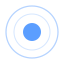
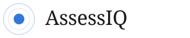
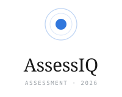
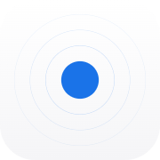
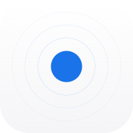
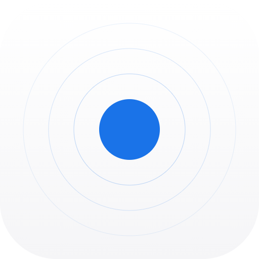
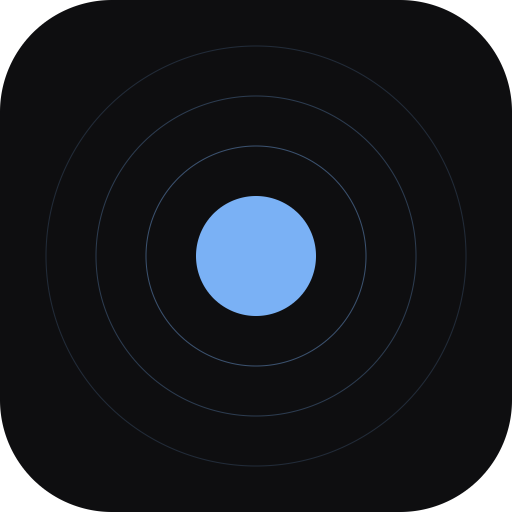
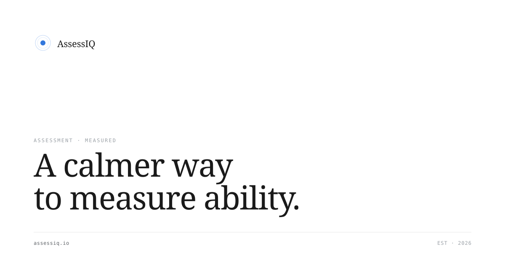

A mark for what's measured.
A solid dot inside a hairline ring — a single result plotted on a distribution. Calm, precise, editorial. The complete identity in one place.
The mark
A solid blue dot, encircled by two hairline rings — the score and its distribution. Use the mark in product, on favicons, and as a small lockup detail.
Primary
For light backgrounds. The default mark used everywhere.

Monochrome
For single-color print, embossing, or any context where blue isn't available. Inherits currentColor.
Lockups
Three approved lockups. Don't compose your own.
Horizontal
Default lockup. Use in product headers, navigation, email signatures.


Stacked
For square real estate — covers, app stores, badges. Includes mono tagline.

Wordmark
Type only. Use when the mark would be redundant (e.g. a logo card).
Clear space & minimum size
Always 1× the mark's height of breathing room. Below the minimum, switch to the favicon.
Clear space
Padding equal to the height of the mark on every side. The dashed line below shows the safe zone.
Minimum size
Mark: 16px. Horizontal lockup: 96px wide.
Color
A single accent. Black, white, gray. Nothing else.
Brand
Use the mark blue only on the mark itself and on links / primary CTAs.
Typography
Newsreader for display, Geist for body, JetBrains Mono for metadata.
Stack
Three families. Never substitute a fourth.
Favicon & app icon
A simplified version of the mark — one ring, one dot — optimized for legibility at 16px.
Favicon
SVG (modern browsers) + PNG fallbacks at 16, 32, 48px.
App icon
Three concentric rings + dot, on a soft white-to-gray rounded square. Works on iOS, Android, PWA.

iOS · 180
Android · 192
PWA · 512
dark · 1024Embed
Drop these tags in your <head>.
Social card
Open Graph / Twitter image. 1200×630.
OG image
Default share card. Subtle grid backdrop, editorial headline.

Do & Don't
A few firm rules to keep the mark recognisable.
Do
Respect the proportions and the palette.
Don't
Common pitfalls that dilute the identity.
Files
Every asset in this kit. Right-click → Save As.
Logo
SVG masters + PNG fallbacks.
{kind=link}
{kind=link}
{kind=link}
{kind=link}
{kind=link}
{kind=link}
{kind=link}
{kind=link}
{kind=link}
{kind=link}
{kind=link}
Favicon & app icon
All sizes for web + native.
{kind=link}
{kind=link}
{kind=link}
{kind=link}
{kind=link}
{kind=link}
{kind=link}
{kind=link}
{kind=link}
{kind=link}
Social
Open Graph / Twitter card.
{kind=link}
{kind=link}